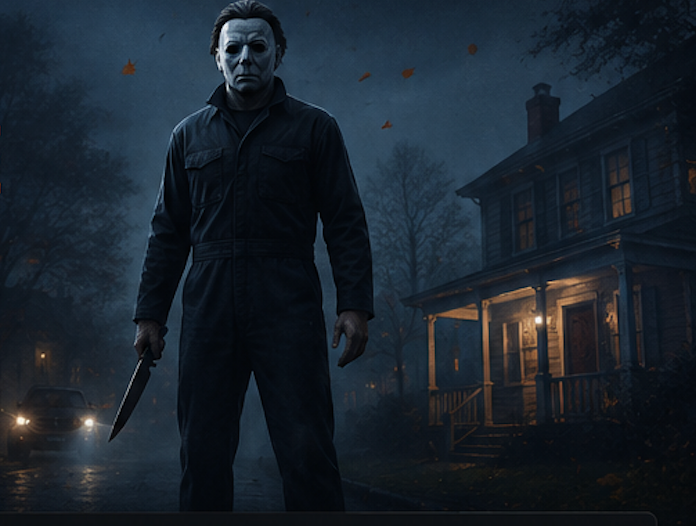

Jennifer Aarons
New CivilianQuiet, organized, and always prepared, Jennifer works at Haddonfield's bookstore while saving for college. Her official profile presents her as ambitious and eager to build a future beyond town.
Meet Michael Myers and all 12 playable Civilians, compare Standard and Digital Deluxe characters, and learn how stats, traits, loadouts, perks, and progression shape each match.
The launch roster combines a playable version of Michael Myers with new residents of Haddonfield and four recognizable characters reimagined from the original 1978 film.

In online multiplayer, one player controls Michael Myers while four players select Civilians. Michael stalks targets, controls darkness, and tries to eliminate Haddonfield's residents. Civilians search the map, warn non-player residents, gather useful items, contact the authorities, and open randomized escape routes. A character choice therefore affects more than appearance: every Civilian has unique statistics, a signature trait, a customizable loadout, and their own progression path.
The Standard Edition includes ten playable Civilians: Jennifer, Tanya, Rachel, Eric, Marcus, Thomas, Bob Simms, Lynda van der Klok, Annie Brackett, and Laurie Strode. Richard and Alexis are two additional playable Civilians included with the Digital Deluxe Edition and Deluxe Upgrade. Michael Myers is the sole playable Killer at launch and is also the protagonist of the six-chapter single-player story.
This guide separates confirmed roster information from assumptions. Where official material has not published a character's exact numbers or signature trait, we identify the character without inventing a build or ranking.
Michael Myers is the playable Killer in 1v4 multiplayer and the central character of the six-chapter single-player story. His starting traits are Killer Sense and Shape Jump. Killer Sense helps Michael detect and stalk nearby prey, while Shape Jump lets him move through darkness and reposition outside a resident's line of sight.
A Michael loadout also supports three selectable abilities, unlockable starting weapons, weapon tints, executions, skins, and cosmetic tints. Official examples of selectable abilities include Reality Tear, Blackout, and Detection Pulse. This flexibility lets Killer players emphasize information, map pressure, mobility, or pursuit without changing the identity of the character.
In multiplayer, Michael receives Special Targets that offer greater rewards if eliminated before time expires. He cannot be killed, but coordinated Civilians, residents, and responding authorities can resist and ultimately detain him.
The base game includes six original Haddonfield residents and four legacy characters reimagined from the 1978 film.
Showing all 10 Standard Edition Civilians.
Quiet, organized, and always prepared, Jennifer works at Haddonfield's bookstore while saving for college. Her official profile presents her as ambitious and eager to build a future beyond town.
Tanya is a social, carefree Haddonfield local who works at the record store. Her outgoing personality and knowledge of the town make her one of the new faces of the multiplayer cast.
Rachel studies funeral services, loves punk music, and spends time around the occult section of the bookstore. Her morbid interests give this original Civilian a distinctive place in Haddonfield.
Eric is one of the six original playable Civilians included with the Standard Edition. Exact stats and signature-trait details should be checked in-game rather than inferred from his appearance.
Marcus is an independent motorcyclist with a guarded personality and strong ties to his grandmother Gloria. Although he often prefers solitude, his profile emphasizes loyalty to people he cares about.
Thomas is a 21-year-old college football player who regularly returns home to see family and friends. His official introduction describes him as confident, positive, and naturally courageous.
Bob, Lynda, Annie, and Laurie appear in scenes inspired by the original film's single-player story and are also fully playable Civilians in multiplayer. Their designs were reimagined for the game's expanded version of Haddonfield, and completing story challenges can unlock alternate outfits and cosmetic items connected to these familiar characters.
Bob returns as a reimagined multiplayer Civilian and is voiced by Nicholas Leung. He begins with a default multiplayer outfit, with additional character cosmetics tied to challenges.
Lynda returns from the 1978 film as a playable Civilian voiced by Angela Carbone. The game adapts her for both recognizable story moments and new multiplayer scenarios.
Annie is a playable Standard Edition Civilian voiced by Kaitlyn Robrock. Her reimagined version connects the original movie cast with the game's broader Haddonfield sandbox.
Laurie is part of the ten-character Standard roster and is voiced by Chelsea Krause. A “Final Girl” Laurie cosmetic is included as advance access with the Digital Deluxe Edition.
Richard and Alexis expand the playable Civilian roster to 12. They are edition content rather than members of the ten-character Standard Edition lineup.
Richard is one of two additional playable Civilians included with the Digital Deluxe Edition. Players who already own the base game can obtain the Deluxe content through the separate Deluxe Upgrade.
Alexis joins Richard as the second Deluxe Civilian. Both are playable characters, not cosmetic skins, and sit outside the ten Civilians supplied with the Standard Edition.
Character selection matters because Michael and the Civilians have different objectives, progression tracks, abilities, and customization systems.
One player becomes Michael Myers and four players choose Civilians. Michael hunts residents and Special Targets. Civilian players explore, recruit residents, collect supplies, contact police, and coordinate an escape.
Michael equips three abilities alongside Killer Sense and Shape Jump. Each Civilian has unique statistics and a signature trait, then adds starting items and a customizable deck of Perk Cards.
Matches and story chapters award experience across Profile, Killer, Civilian, and Weapon levels. Progression unlocks characters, abilities, items, cosmetics, executions, and higher challenge tiers.
Every Civilian is defined by four broad statistics. Athleticism affects movement on foot and by bicycle. Personality influences conversations with residents, calling authorities, commanding followers, and resistance to Fear and Stalk. Resourcefulness covers repair skill, environmental awareness, vehicles, and firearms. Capability represents general toughness and effectiveness with melee weapons or throwable objects.
These categories help players compare Halloween: The Game characters without reducing the roster to a single “best” pick. A useful choice depends on the job your group needs: moving quickly, persuading residents, handling objectives, or surviving direct pressure. Exact values and balance can change through game updates, so this guide avoids publishing unsupported tier rankings.
Civilian Perk Cards are collected through randomized rolls using Perk Points earned by completing matches. Players can assemble the cards they own into Perk Decks and temporarily upgrade cards for a limited number of matches. Starting items are separate loadout unlocks and can give an individual Civilian more options when a match begins.
Customization extends beyond perks. Civilian appearances can use outfits, tints, hair or headwear, eyewear, makeup, and blemishes. Michael has skins and tints as well as unlockable weapons, weapon tints, and executions. Progressive Challenges are tied to particular Civilians, Michael skins, and weapon types, while passive challenges track broader play. This means staying with one character can advance character-specific goals, but switching roles still contributes to account-level progress.
New players should begin with a Civilian whose statistics and signature trait support an easy-to-understand job, then build a Perk Deck around that role. In a coordinated group, avoid having every player specialize in the same task. A mix of mobility, persuasion, objective handling, and defensive capability gives the team more ways to react when items and escape routes appear in different locations.
Michael players should learn the default Killer Sense and Shape Jump tools before changing all three selectable ability slots. Civilians can create safety by staying alert, working with residents, and managing noise, but Michael gains pressure when targets are isolated or unaware. Character knowledge matters most when it supports the team objective rather than a cosmetic preference alone.
The confirmed launch selection consists of Michael Myers as the playable Killer, ten Standard Edition Civilians, and two additional Digital Deluxe Civilians. That makes 13 playable roles across the complete launch offering, or 11 with the Standard Edition alone.
The Standard Edition includes Jennifer, Tanya, Rachel, Eric, Marcus, Thomas, Bob, Lynda, Annie, and Laurie. Richard and Alexis add two more through the Digital Deluxe Edition or Deluxe Upgrade.
Yes. Michael is the protagonist of the six-chapter single-player story and the Killer controlled by one player in online 1v4 multiplayer.
Yes. Laurie Strode is one of the ten Standard Edition Civilians. She appears alongside the returning Bob Simms, Lynda van der Klok, and Annie Brackett.
No. They are additional playable characters included with the Digital Deluxe Edition. The publisher also offers a Deluxe Upgrade for owners of the base game.
No. Official progression information states that Civilians have unique stats and signature traits. Their loadouts can also use different starting items, appearance options, and Perk Decks.
Yes. Progression and challenges award cosmetic items. Single-player challenges can unlock alternate outfits, while character-linked Progressive Challenges offer additional rewards.
Information verified against the official Heroes of Haddonfield, Legacy Characters Reimagined, Multiplayer Gameplay Overview, Launch and Early Access, and Progression & Customization announcements.